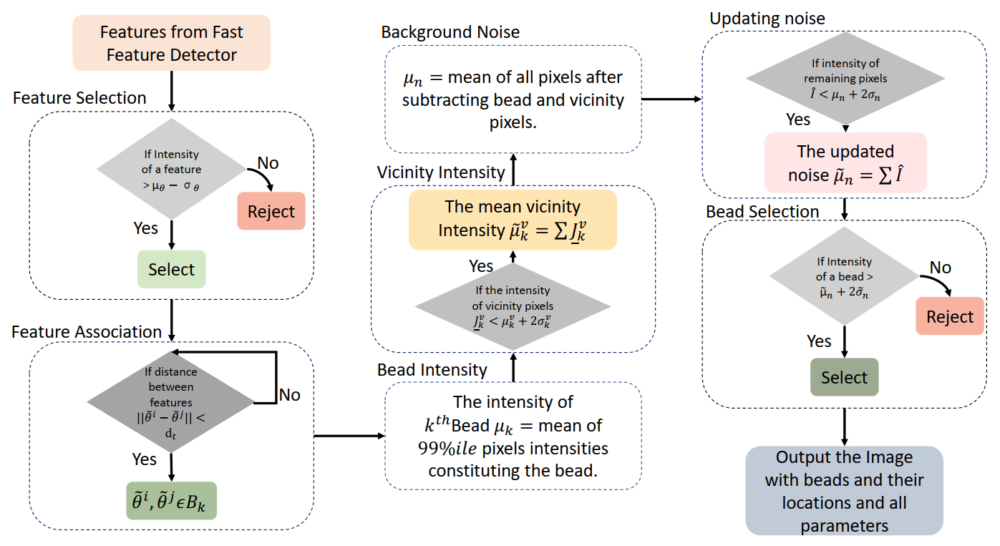
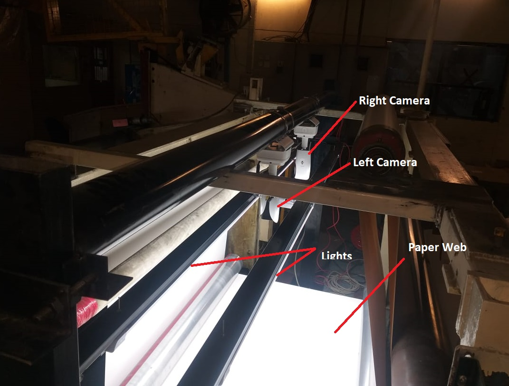

|
Muhammad Nabeel Tahir I am a Ph.D. candidate at RUTGERS University. I am currently working at LIMPH @ RUTGERS under the supervision of Dr. Umer Hassan. I specialize in integrating biomedical systems with computer vision, machine learning, signal processing, and embedded hardware design. |

|
🏆Latest Highlights |
||||||||
|
ResearchMy research focuses on the integration of modern technologies (ML/DL), Signal Processing, and microfabrication to develop microfluidic biosensors and point-of-care devices to diagnose infectious diseases and monitor the immune system. |
|  |
AQAFI: A bioanalytical method for automated KPIs quantification of fluorescent
images of human leukocytes and micro–nano particles
M A. Sami, M. N. Tahir, Umer Hassan Analyst, 2023 [code] [paper] A novel method for automated quality assessment of fluorescent images (AQAFI) captured using smartphone fluorescence microscopes (SFM). AQAFI utilizes novel feature extraction methods to identify and measure multiple features of interest in leukocyte and micro–nanoparticle images. |
|  |
Online, Real-time and Robust Detection and Localization of Foreign Objects on
Paper Surface using Machine Vision and Clustering
M.N. Tahir, Zubair Khalid, Adeem Aslam 28th International Conference on Mechatronics and Machine Vision in Practice (M2VIP), 2022 [paper] A platform for real-time object detection on paper surface. Developed as a product quality control system for high-speed paper manufactiring. Helped in saving 30 million PKR product quality spendings. |
ExperienceMy relevant professional and academic experience. |

|
Graduate Research Assistant
LIMPH Laboratory, Rutgers University
2022 – Present
Conducting research on biosensor design, and development. Developing new technologies for infectious disease diagnosis. Improving the accuraccies of existing biosensors through integration of machine learning and signal processing. |
|
Project Team Lead
SDSA Laboratory, Lahore University of Management Sciences
2018 – 2021
Worked on cutting edge research involving computer vision based/deep learning based video and image processing solutions for local industries and publich projects. |
Miscellanea |
Academic Service |
Reviewer, The IEEE International Conference on Computing and Machine Intelligence (ICMI) (11 Papers)
Reviewer, Journal of Neuroscience Methods (1 Paper) |
Teaching |
Digital Logic Design, EE231, Teaching Assistant, EE, Rutgers University, Summer 2025
Computer architecture and Assembly Language, EE333, Teaching Assistant, EE, Rutgers University, Summer 2025 Programming Methodology I, EE252, Summer Instructor, EE, Rutgers University, Summer 2023 Computer architecture and Assembly Language, EE333, Teaching Assistant, EE, Rutgers University, Fall 2023 Computer architecture and Assembly Language, EE333, Teaching Assistant, EE, Rutgers University, Fall 2022 |
|
Home |
Projects
↑ Back to Top |
|
|
| © 2025 Muhammad Nabeel Tahir – Greater New York City Area, United States of America |
| Design and source code from Jon Barron’s website |